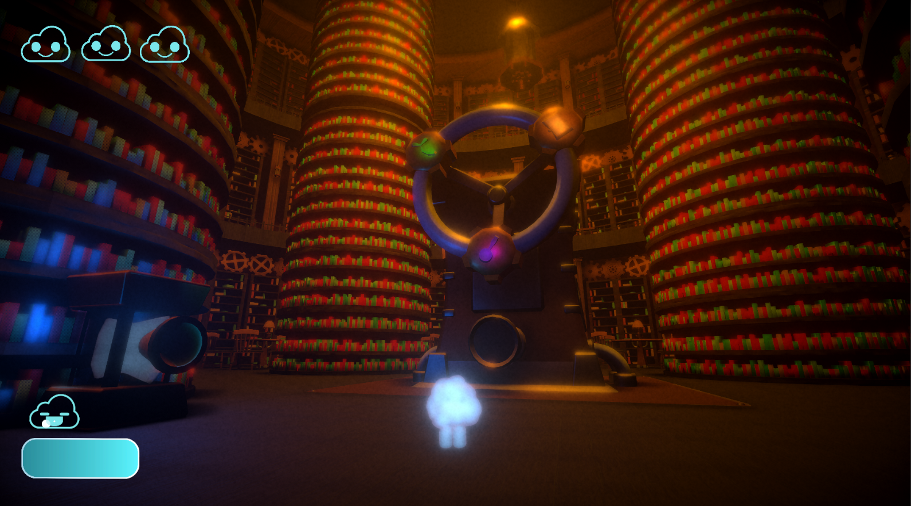
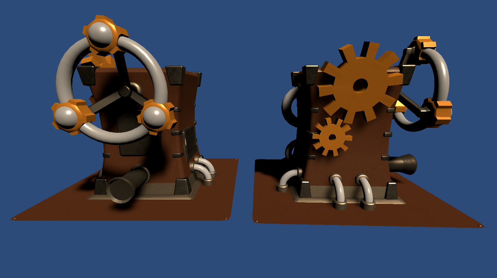
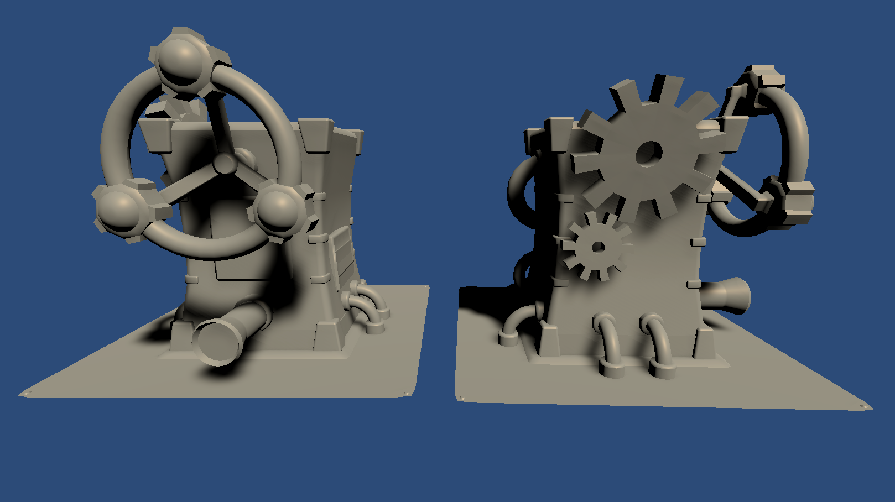
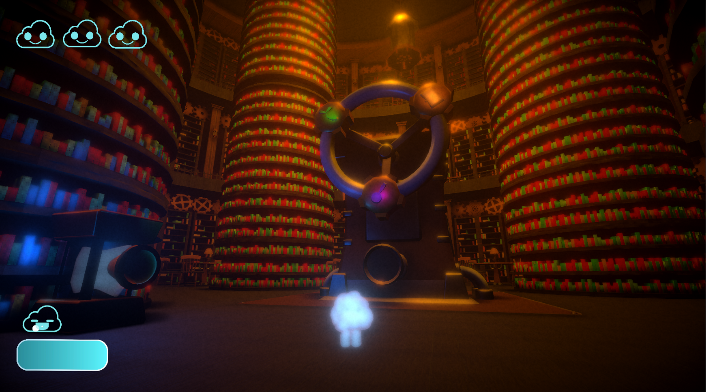
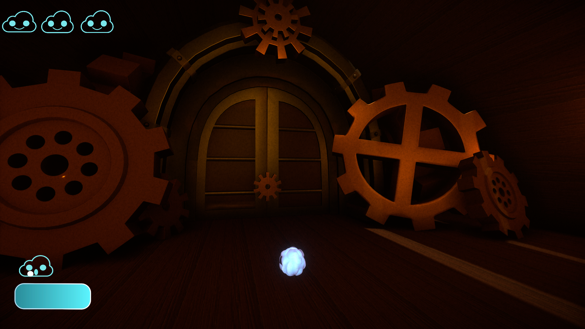
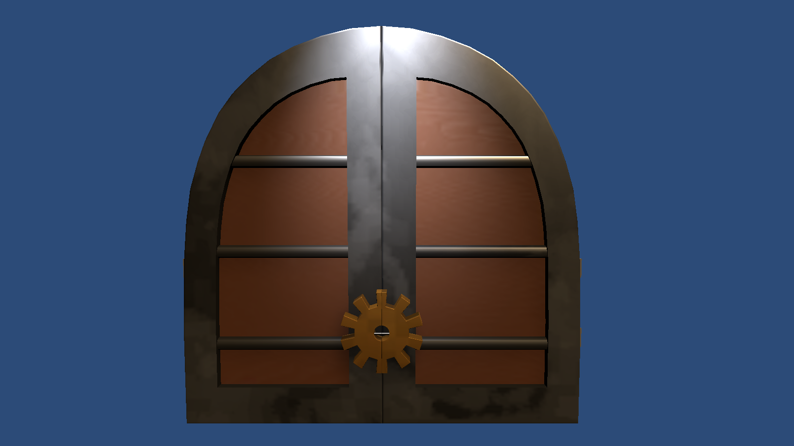
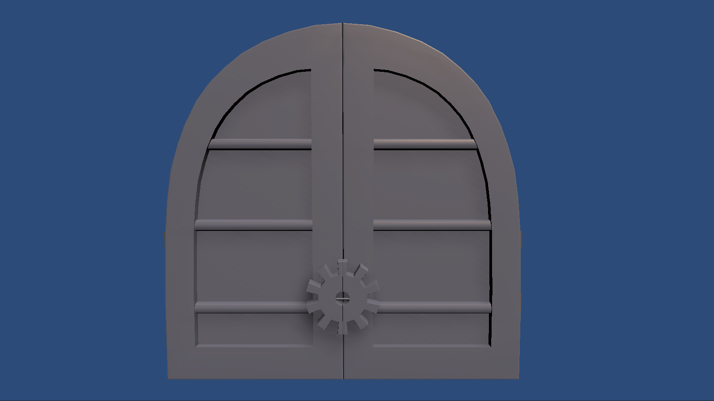
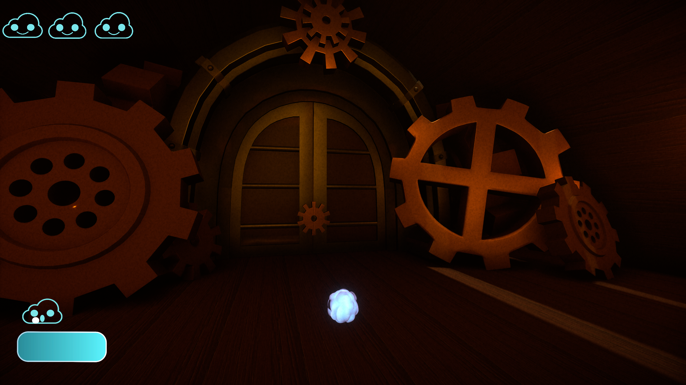
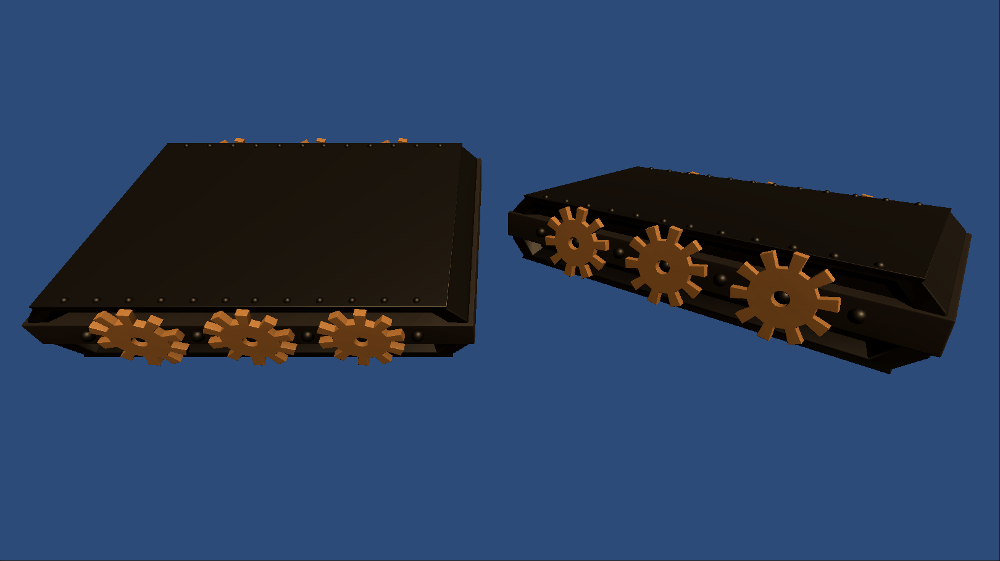
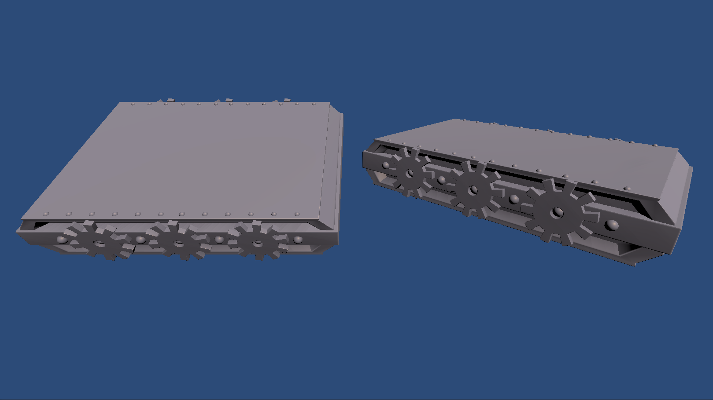

Pursuit of Knowledge
Cloudweaver Studios
Summary
For Pursuit of Knowledge, I was tasked with creating multiple 3D environmental assets. I created a variety of objects to help with set dressing, and for the assets that the player would interact with directly.
Information
- Engine:
- Team Size:
- Duration:
- Role:
- Unity
- 7
- 7 Week Development Cycle
- 3D Environmental Artist
Software Used
- Maya - model creation and UV unwrapping
- Substance Painter - texturing
Assets
-
Level Select Machine
-

In Game Asset
-

Textured Model
-

Untextured Model
Details
- Time:
- 8 Hours
When filled with steam, the level select machine will rotate until one of the three level symbols is centered at the bottom. This will load in the corresponding level behind the doorway.
-

-
Door
-

In Game Asset
-

Textured Model
-

Untextured Model
Details
- Time:
- 4 Hours
The door opens and closes when the player activates the nearby steam tank device. The door will swing open and show the hallway that leads to the subsequent attached level.
-

-
Moving Platform
-

In Game Asset
-

Textured Model
-

Untextured Model
Details
- Time:
- 4 Hours
The platform serves as a stepping stool for the player to walk on to traverse through levels. The gears on the side were made so that they could rotate when moving to simulate a mechanism.
-